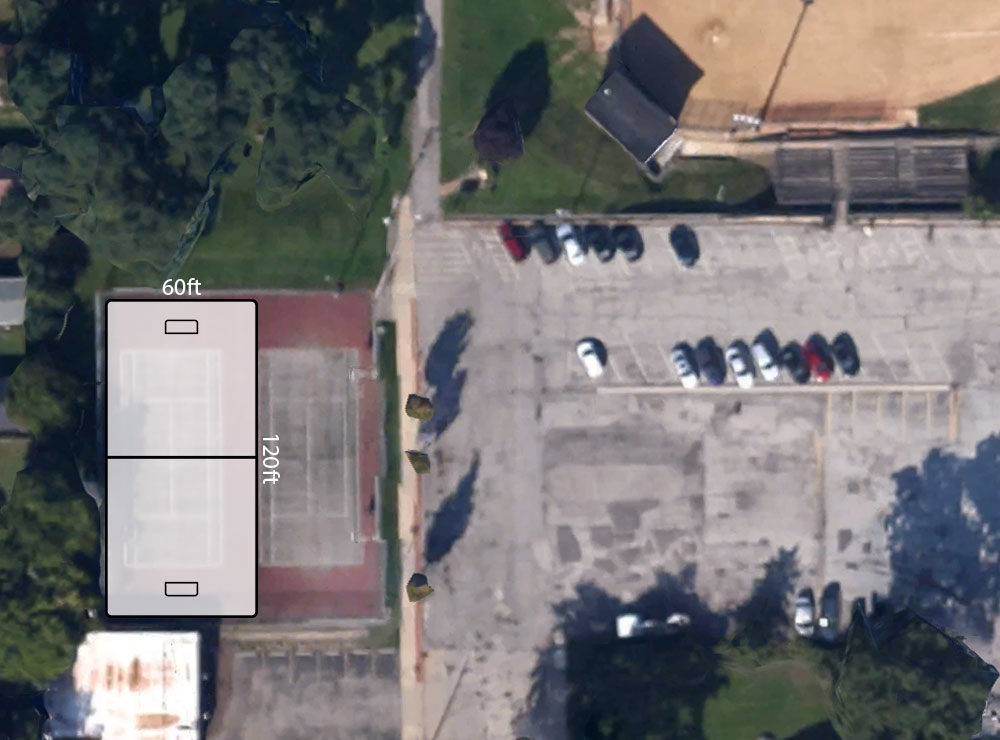

Cleveland Bike Polo court proposal
Cleveland Bike Polo is looking for a permanent home:The court space at Kauffman Park in Lakewood, OH
Quick primer on hardcourt bike polo:
Hardcourt Bike Polo has been around in it's current iteration since 1999 and was born in Seattle, WA. It's now played in over 30 countries and 300 cities. Most major (and some non-major) cities all over the country have a club. Here's a quick informative video that will give you an idea about what hardcourt bike polo is all about:
Cleveland Bike Polo has been playing for roughly 8 years in various parks and courts around the city. We're a diverse group, ranging in age from teenagers to 40-somethings, with varying professions and interests. We encourage anyone to stop down the courts and try it out, and hopefully join us on a more constant basis and grow our membership. Currently, CBP plays at Gordon Park off of the shoreway on the east side of the city. While this space affords us a place to play, we are discouraged by the lack of foot traffic and ability to bike from our homes to the court. As a club, we've been searching for a permanent home that satifies a few objectives:
- Visibility: We'd like to be visible to more people so they can watch the game, as well as participate.
- Growth: This goes hand in hand with visibility, but being a part of a city like Lakewood would allow for us to pool from a very bike friendly community for new, committed members.
- Tournaments: We'd like at least 1 court to be able to hold regional tournaments. Our members have participated in competitions all over the country, and we've seen them be a positive and captivating event to hold in a city. The players would support the local economy for the weekend, as well as get to experience Lakewood and surrounding areas/attractions/businesses.
- Community: We would like (again) to be a part of a community. Years ago the club played at the West Side Market in Ohio City on Sundays. That was the last time people from the Greater Cleveland area were exposed to bike polo. We'd like a return to that time.
Use of court space at Kauffman Park:
Here is our (visual) proposal for the use of current court space at Kauffman Park. We are using current polo ruleset dimensions to create a court that could be used for tournaments. Minimum size is 120x60ft, so the area as it stands would fit a court on the small end of the spectrum.
As you can see, it takes up more than 50% of the width of the space. There is a chance with additional planning that we could still incorporate the tennis court within the area provided. To the right of the court in this mock, we could include seating or a picnic area and are open to any and all suggestions.
Hours and the creation of a multi-use facility
Cleveland Bike Polo plays during the day on Sunday at noon and Thursday at 6pm. We have these current times because it best fits our schedules. If granted permission to use the park space, we could keep to very specific times so the neighborhood can anticipate when we play. Additionally, in other cities that have public space dedicated to bike polo courts we've seen them used for hardcourt soccer (Futsal), and roller/street hockey. The space could also be used for young kids to ride bikes in a safe, walled-off area.
Concerns
Members of Kauffman Park Friends have expressed that noise is one of the main concerns the neighborhood has when dealing with court use. Bike polo noise is comparable to communication in other team sports ("Pass the ball," "I have goal," etc). The noise level of bike polo is not excessive compared to other sports and our normal schedule should ensure our activities don't interfere with quiet times.
Summary
Cleveland Bike Polo is looking forward to working with the City of Lakewood and Kauffman Park Friends to bring our dream of a permanent bike polo court to fruition. If you have any questions they can be directed at the following email address: contact@clevelandbike.com
Thanks.